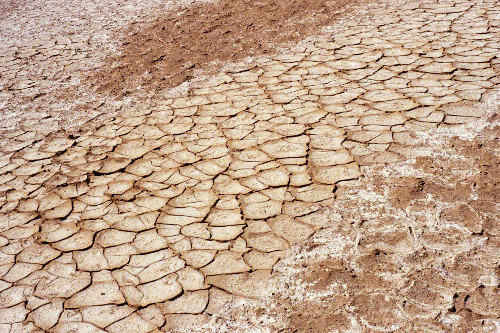
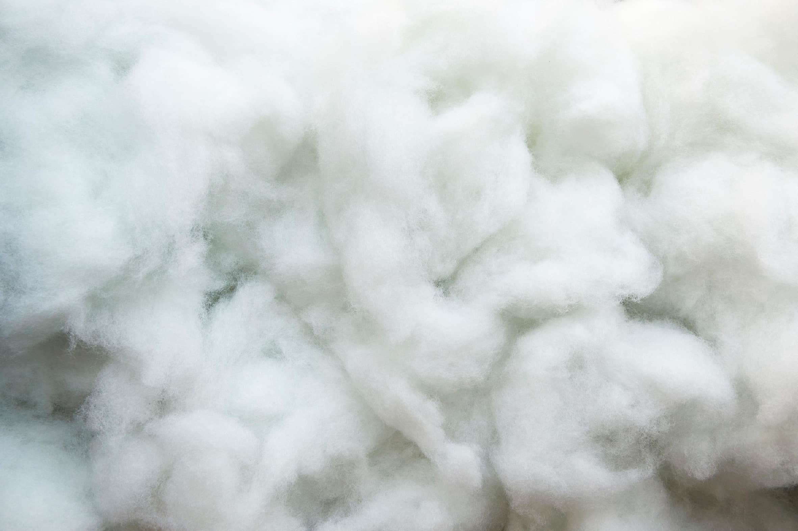

Water
We all know that the world is facing extreme freshwater scarcity - in fact over a billion people don’t have access to safe water. Fashion is the second largest consumer and polluter of water because processing raw materials and manufacturing clothing consume extreme amounts of precious H2O.
Consumption
Manufacturing textiles is extremely water intensive. For example, producing one pair of denim jeans uses over 1,000 gallons of water. This amounts to over 450 billion gallons of water every year just to make the jeans sold in the US.
Pollution
After the water is used in the manufacturing process, this often-polluted water is then sent back to our rivers, lakes and oceans. The World Bank estimates almost 20% of global industrial water pollution comes from the treatment and dyeing of textiles. In China alone, the textile industry pumps out more than 3 billion tons of wastewater every year.
Plastic pollution
Synthetic clothes are made with plastic and when you wash synthetics they shed small plastic pieces called microfibers. Microfibers are too small to be filtered out by waste treatment plants, so they end up in our waterways and oceans by the billions. Once in the ocean, they act as pollution magnets that marine animals mistake for food, and which can eventually end up in our food.
We use recycled synthetics to lessen our environmental impact, but these potentially shed microfibers too. That's why we're working hard to phase out all synthetics, recycled or not from highly washed garments like tops, bottoms, and dresses. That way you can wear and wash all your clothes without adding to this mess.

Climate change
Contrary to what some of those crazies say, we think climate change is real and fashion is not making it better. From growing textile fibers to moving fabrics around the world, making clothes sadly fuels this global climate crisis.
Production emissions
Production processes emit CO2 and other greenhouse gases which pollute our atmosphere and contribute to climate change. For example, cotton, leather and other raw materials grown in industrial farming operations create huge energy footprints. Also, polyester, nylon, and other petroleum-based materials emit harmful volatile organic compounds (VOCs) and nitrous oxide, a greenhouse gas almost 300 times more potent than CO2. Nearly half of the ready-to-wear products Americans buy are manufactured in China, where the textile industry emits 3 billion tons of soot each year, greatly impacting both human and environmental health.
Transit emissions
98% of clothing bought in the US was imported from abroad. A single cotton T-shirt transported from Xinjiang, China to Los Angeles results in over 9,000 “clothing miles” and over 2 pounds of CO2 equivalent emissions.

Pollution & trash
The production of textile fibers uses 20 billion pounds of chemicals a year and some of them are just plain toxic.
Chemicals
2,000 different chemicals, including formaldehyde, chlorine, lead, and mercury are used in textile processing. Of these, over 1,600 are used in dyeing processes, but only 16 are actually EPA-approved. Um…
Runoff
Runoff from these dye houses can contain heavy metals, alkali salts, toxic solids, and harmful pigments. About 40% of colorants used around the world contain organically bound chlorine, a known carcinogen. It can cause cancer like tobacco, asbestos and DDT. What a nightmare-factory.
Trashed clothes
Americans throw away over 14 million tons of textiles a year. Over 99% of the clothing thrown away in the US can be recycled or reused, but sadly more than 85% ends up in landfills. Even in a landfill, these materials don’t just go away—nylon takes 30 to 40 years to biodegrade, while polyester requires more than 200 years. Talk about a hand me down.

Cotton
We do not think conventional cotton is awesome. About ⅔ of all apparel contains cotton fibers, and we believe it has some of the most harmful environmental impacts of all fabric.
Pesticides
According to the World Wildlife Foundation, conventional cotton consumes 11% of the world’s pesticide sales and 24% of the world’s insecticide sales, despite the fact that cotton only uses 2.4% of total arable land. Terrible ratio if you ask us.
Water
Most cotton requires high levels of irrigation and water-intensive processing. A cotton t-shirt can use up to 700 gallons of water to make (that’s close to 18 full bathtubs’ worth). Irrigation systems input and circulate chemicals into the groundwater, making cotton production the largest textile contributor to freshwater and soil toxicity in the world.
Other not awesome fabrics
Did you know most fast fashion is actually made out of oil? We were shocked when we found out, too. Polyester, acrylic, nylon, spandex, and acetate are all made from nonrenewable fossil fuels, which require a bunch of energy to produce and emit gross stuff from the landfill.
Shoes
Footwear represents about 1/5 of the total impact of the apparel industry and nearly 1/4 of the climate impacts. 97% of the impact of shoes happens during material processing and manufacturing, so that's where we focused our attention with Ref Shoes.
We applied all our same crazy high standards of making clothes to making shoes. Ref Shoes save an average of 52% CO2 emissions, 70% water, and 65% waste compared to most shoes bought in the US.
Production
The manufacturing process emits pollution into the air and waterways harming environmental and human health. For every ton of polyester, manufacturers emit over five tons of carbon dioxide.
After-life
These textiles take anywhere from 20 to 200 years to biodegrade.When they do, they release chemicals like formaldehyde, heavy metals, BPA, and PFCs into the environment. So basically you wear it twice and it lives in a landfill with its formaldehyde and BPA buddies for 200 years.